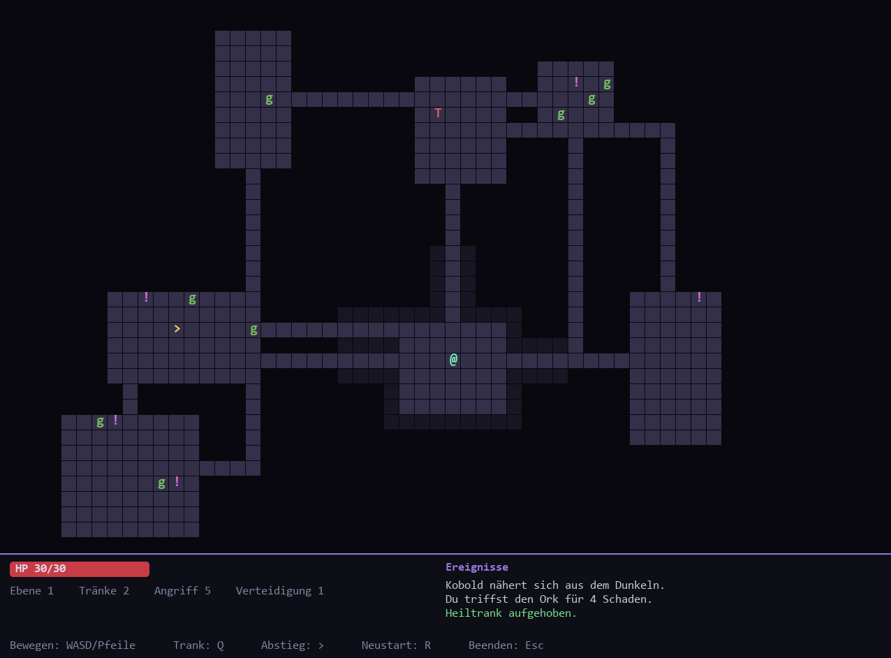
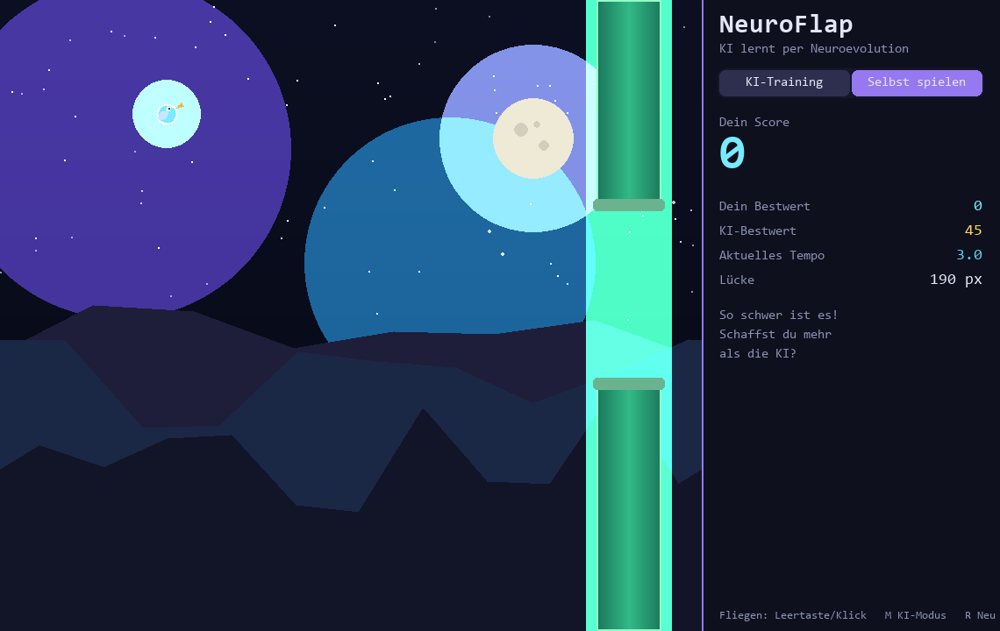

Eine selbstlernende KI wird per Neuroevolution übermenschlich gut in Flappy Bird.
Nobody taught it to fly. It evolved.

KI-Modus: 150 Vögel lernen gleichzeitig – mit Live-Visualisierung des besten Gehirns und der Lernkurve.
Neuronales Netz und genetischer Algorithmus komplett selbst gebaut – keine ML-Bibliothek.
Selektion, Crossover, Mutation. Nach wenigen Generationen fliegt die KI praktisch endlos.
Wechsle in den Mensch-Modus und tritt direkt gegen den KI-Bestwert an. Schaffst du mehr?
Lücken werden enger, Tempo schneller – und die KI meistert es trotzdem.

Mensch-Modus: Spiel selbst und vergleiche deinen Score direkt mit dem der KI.
Jeder Vogel wird von einem eigenen kleinen neuronalen Netz gesteuert. Wer weiter kommt, gibt seine „Gene" an die nächste Generation weiter – so wird die Population Runde um Runde besser:
Das Spiel läuft als native Python-App (Python 3.10+). In wenigen Sekunden startklar:
git clone https://github.com/matti24/Hacked-FlappyBird.git
cd Hacked-FlappyBird
pip install -r requirements.txt
python main.py
Tipp: Drück 5 für 30× Tempo und sieh der KI beim Lernen im Zeitraffer zu.